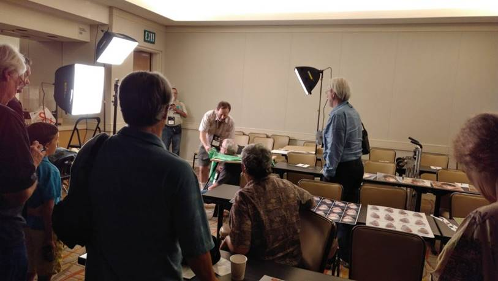
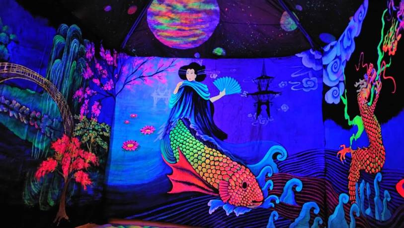
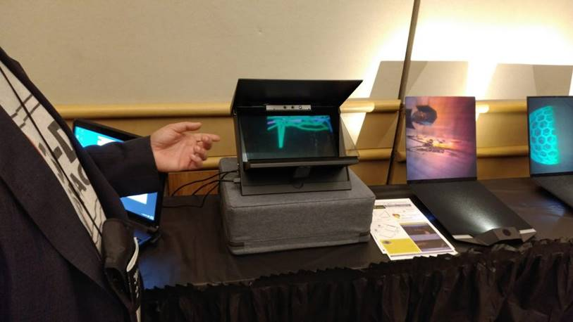

Last week I attended 3D-Con in Irvine. Besides the military grade conference badge holder (so many pockets!), registration loot included anaglyph and polarized glasses plus a pair of solar eclipse viewing glasses. I was pleased to learn how to make stereocards from David Kuntz and how to use PhotoStereo Maker from David Starkman, Steve Berezin and David Kuntz. There is a corresponding Android app called 3DSteroid. Lots of handy tools for creating and viewing 3D images. I also attended a workshop by Ted Whitten on converting 2D to 3D images as well as watched phantograms being made by Barry Rothstein.
There was a gallery that included an mural/installation by Debi Cable using chromadepth glasses. More about her work here. Also in the gallery space was a collection of stereographic & 3D history from Eric Kurland. He has been working to build 3-D SPACE: The Center for Stereoscopic Photography, Art, Cinema, and Education. Beyond his personal enthusiasm and work in 3-D, Kurland has inherited the entire collection from the now closed 3-D Center for Art and Photography in Portland.
There were many vendors presenting VR headsets, viewers and cameras. One that caught my eye was the Lucidcam, a relatively affordable stereo video camera. While 3D cameras and cellphone cameras ebb and flow, we are almost at a tipping point of average consumer adoption or VR. The iphone was released 10 years ago and many people thought they’d never want or need one. Smartphones are nearly ubiquitous in 2017. Especially with large companies like Facebook integrating VR into their platforms, I think VR has the same potential in becoming mainstream.

Phantograms being made by Barry Rothstein

Cromadepth installation by Debi Cable

Eric Kurland shows off an interactive 3D hologram prototype.